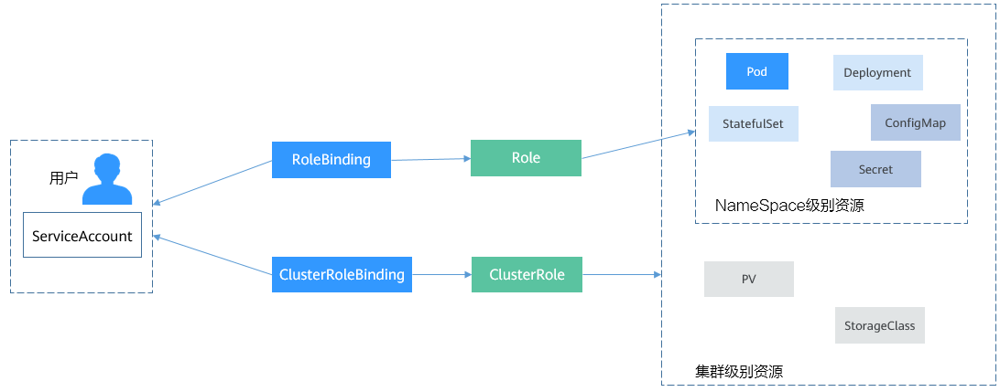
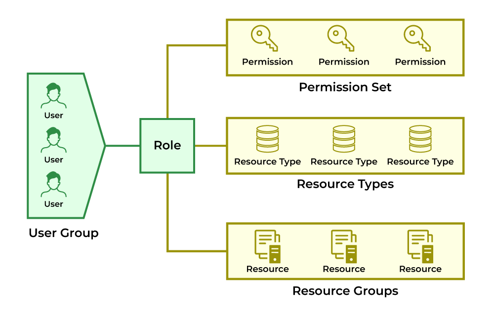
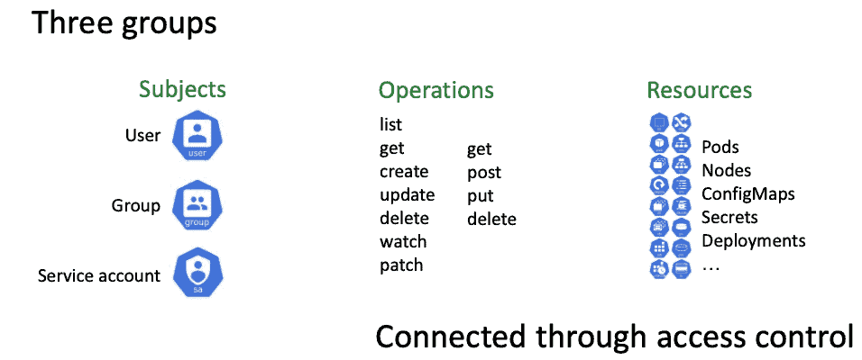

- 作者 :Xcbeyond
- 发表于 :2025-04-27 09:55:20
- 分类 : Kubernetes
在云原生时代，Kubernetes 已成为容器编排的事实标准，但其强大的灵活性也带来了复杂的安全挑战。集群中的每一个操作——从部署应用到查看日志，从管理节点到访问敏感配置——都依赖于精细的权限控制。若权限管理不当，轻则导致应用功能异常，重则引发数据泄露甚至集群瘫痪。
RBAC（基于角色的访问控制） 作为 Kubernetes 安全体系的核心，是平衡灵活性与安全性的关键工具。然而，许多开发者和管理员在实践中常陷入两大误区：
-
过度授权：为便利直接绑定高权限角色（如
cluster-admin），埋下安全隐患； -
忽视默认配置：对自动生成的
defaultServiceAccount 缺乏管理，导致权限意外扩散。
本文将从 RBAC 的权限模型出发，深入解析角色配置、权限查看与问题排查的全流程，并聚焦 default ServiceAccount 的权限陷阱与最佳实践。无论您是刚接触 Kubernetes 的新手，还是希望优化集群安全的资深工程师，都能通过本文掌握构建安全、可控权限体系的系统化方法。
1、RBAC 权限体系详解
RBAC（基于角色的访问控制 Role-based access control）是 Kubernetes 实现精细化权限管理的核心机制，通过 角色（Role/ClusterRole） 和 绑定（RoleBinding/ClusterRoleBinding） 控制用户、组或 ServiceAccount 的资源访问权限。
Kubernetes RBAC API 定义了四种类型：Role、ClusterRole、RoleBinding 与 ClusterRoleBinding，这四种类型之间的关系和简要说明如下：
-
Role：角色，是定义一组对 Kubernetes 资源（命名空间级别）的访问规则。 -
RoleBinding：角色绑定，定义了用户和角色的关系。 -
ClusterRole：集群角色，是定义一组对 Kubernetes 资源（集群级别，包含全部命名空间）的访问规则。 -
ClusterRoleBinding：集群角色绑定，定义了用户和集群角色的关系。
Role 和 ClusterRole 指定了可以对哪些资源做哪些动作，RoleBinding 和 ClusterRoleBinding 将角色绑定到特定的用户、用户组或 ServiceAccount上。如下图所示:

1.1 核心组件与参数说明
| 对象 | 作用范围 | 关键字段说明 |
|---|---|---|
Role |
命名空间内 | apiGroups：目标资源所属的 API 组（如: apps 对应 Deployment）。 |
resources：资源类型（如: pods、deployments）。 |
||
verbs：允许的操作（如: get、list、create）。 |
||
ClusterRole |
全局（集群级） | 同上，但可定义集群级资源（如: nodes、persistentvolumes）。 |
RoleBinding |
命名空间内 | roleRef：引用的 Role 或 ClusterRole 名称及类型。 |
subjects：绑定的主体（kind 可为 User、Group、ServiceAccount）。 |
||
ClusterRoleBinding |
全局（集群级） | 同上，但权限作用于整个集群。 |
Role 是定义了一系列的资源权限规则， 其中关键字段对应关系如下：

RoleBinding 是将权限和用户关联起来，即： Role 与 ServiceAccount 关联起来，其中关键字段对应详细说明如下：

2.2 内置 ClusterRole 及权限范围
| ClusterRole 名称 | 权限范围 |
|---|---|
view |
只读权限，可查看命名空间内大多数资源（不包括 Secrets）。 |
edit |
允许修改资源（如创建/删除 Pod、更新 Deployment），但不能管理 RBAC 或命名空间。 |
admin |
命名空间管理员，可管理资源（包括 Role 和 RoleBinding），但不能操作资源配额。 |
cluster-admin |
集群超级管理员，拥有所有资源的完全控制权。 |
2、RBAC 权限配置详解
2.1 创建自定义 Role 和 RoleBinding
场景：授权 dev-sa ServiceAccount 在 test 命名空间中管理 Pod 和 Deployment。
Role 定义（pod-deploy-manager.yaml）:
apiVersion: rbac.authorization.k8s.io/v1
kind: Role
metadata:
namespace: test # 作用命名空间
name: pod-deploy-manager
rules:
- apiGroups: [""] # 核心 API 组（如 Pod）
resources: ["pods"]
verbs: ["get", "list", "create", "delete"]
- apiGroups: ["apps"] # 扩展 API 组（如 Deployment）
resources: ["deployments"]
verbs: ["*"] # 通配符表示所有操作
RoleBinding 定义（bind-dev-sa.yaml）:
apiVersion: rbac.authorization.k8s.io/v1
kind: RoleBinding
metadata:
namespace: test
name: dev-sa-access
roleRef:
apiGroup: rbac.authorization.k8s.io
kind: Role # 引用类型为 Role（非 ClusterRole）
name: pod-deploy-manager
subjects:
- kind: ServiceAccount
name: dev-sa # 绑定的 ServiceAccount 名称
namespace: test # ServiceAccount 所在命名空间
kubectl apply -f pod-deploy-manager.yaml
kubectl apply -f bind-dev-sa.yaml
2.2 绑定内置 ClusterRole
场景：为 monitor-sa ServiceAccount 授予全局只读权限。
kubectl create clusterrolebinding monitor-view \
--clusterrole=view \ # 引用内置 view ClusterRole
--serviceaccount=monitoring:monitor-sa # 格式：<命名空间>:<ServiceAccount名称>
3、RBAC 权限查看与调试
3.1 使用 kubectl auth can-i 检查权限
| 参数 | 说明 |
|---|---|
--list |
列出所有权限。 |
--as |
模拟指定身份（如 system:serviceaccount:test:dev-sa）。 |
--namespace |
指定目标命名空间（默认当前上下文命名空间）。 |
示例：
# 检查 dev-sa 在 test 命名空间是否有删除 Pod 的权限
kubectl auth can-i delete pods \
--as=system:serviceaccount:test:dev-sa \
--namespace=test
# 输出：yes/no
3.2 查看 Role/ClusterRole 的详细规则
# 查看 Role 的权限规则（命名空间需指定）
kubectl describe role pod-deploy-manager -n test
# 查看 ClusterRole 的权限规则（全局）
kubectl describe clusterrole edit
输出示例：
Name: pod-deploy-manager
Labels: <none>
Annotations: <none>
PolicyRule:
Resources Non-Resource URLs Resource Names Verbs
--------- ----------------- -------------- -----
pods [] [] [get list create delete]
deployments.apps [] [] [*]
3.3 查看绑定关系
# 列出命名空间内所有 RoleBinding
kubectl get rolebindings -n test -o wide
# 查看 ClusterRoleBinding 的详细信息
kubectl describe clusterrolebinding monitor-view
4、RBAC 问题排查与修复
4.1 常见问题场景
-
权限不足：操作资源时返回
Error from server (Forbidden)。 -
权限泄露：ServiceAccount 拥有意外的高权限（如删除 Node）。
-
配置错误：RoleBinding 引用了错误的 Role 或未指定命名空间。
4.2 系统化排查流程
-
确认权限范围
kubectl auth can-i --list --as=system:serviceaccount:test:dev-sa -
检查
RoleBinding# 列出命名空间内所有 RoleBinding，筛选目标 ServiceAccount kubectl get rolebindings -n test -o json | \ jq -r '.items[] | select(.subjects[].name=="dev-sa") | .metadata.name' # 查看具体 RoleBinding 的配置 kubectl describe rolebinding dev-sa-access -n test -
检查
ClusterRoleBinding# 列出所有 ClusterRoleBinding，筛选目标 ServiceAccount kubectl get clusterrolebindings -o json | \ jq -r '.items[] | select(.subjects[].name=="dev-sa") | .metadata.name' -
验证聚合
ClusterRole某些 ClusterRole（如
edit）通过标签选择器聚合其他角色的权限：# 查看 edit ClusterRole 的聚合规则 kubectl get clusterrole edit -o yaml # 输出片段 aggregationRule: clusterRoleSelectors: - matchLabels: rbac.authorization.k8s.io/aggregate-to-edit: "true" rules: [] # 动态合并其他 ClusterRole 的规则 -
检查准入控制器
某些准入控制器（如 Kyverno）可能自动修改 RBAC 规则：
# 查看所有准入控制器 kubectl get validatingwebhookconfigurations,mutatingwebhookconfigurations
4.3 修复权限问题
-
删除无效的 Binding
# 删除 RoleBinding kubectl delete rolebinding unexpected-binding -n test # 删除 ClusterRoleBinding kubectl delete clusterrolebinding risky-global-access -
调整
Role规则# 编辑 Role 移除危险权限（如 secrets 的 write 权限） kubectl edit role pod-deploy-manager -n test -
限制高危操作
通过
ResourceQuota和LimitRange限制资源操作：apiVersion: v1 kind: ResourceQuota metadata: name: prevent-dangerous-ops namespace: test spec: hard: services.loadbalancers: "0" # 禁止创建 LoadBalancer 服务
5、关于 default ServiceAccount 的权限说明
5.1 默认权限行为
-
RBAC 启用时：
默认情况下，
defaultServiceAccount 无任何权限，除非显式绑定角色。这一规则适用于自建集群（如使用
kubeadm部署）和大多数托管集群（如 EKS、AKS）。 -
RBAC 未启用时（仅旧版本 Kubernetes <1.6）：
defaultServiceAccount 拥有 集群管理员权限（等同于cluster-admin）。注意：现在 Kubernetes 版本（≥1.6）默认启用 RBAC。
-
云平台特殊配置：
某些托管服务（如 GKE）可能为
defaultServiceAccount 自动绑定基础角色（如view），使其拥有只读权限。验证方法：
kubectl describe clusterrolebinding | grep "system:serviceaccount:<命名空间>:default"
5.2 推荐使用场景
-
临时测试：在开发环境中快速验证简单操作（需显式授权）。
-
无敏感操作的简单应用：例如仅需读取配置的监控工具（需绑定
view角色）。 -
兼容旧系统：某些遗留系统可能依赖
defaultServiceAccount。
5.3 禁止使用场景
-
生产环境核心应用：如数据库、支付服务等敏感组件。
-
需跨命名空间操作的场景：避免滥用
ClusterRoleBinding扩大权限。 -
开放给外部系统的服务：防止 Token 泄露导致权限扩散。
5.4 安全注意事项
-
最小权限原则:
即使使用
defaultServiceAccount，也必须绑定最小必要权限。反例：
# 危险操作：为 default 绑定 cluster-admin kubectl create clusterrolebinding default-admin \ --clusterrole=cluster-admin \ --serviceaccount=test:default -
禁用自动挂载 Token：
在 Kubernetes 中，当 Pod 使用 ServiceAccount 时，默认会将关联的 Token 自动挂载到 Pod 的文件系统中（路径为
/var/run/secrets/kubernetes.io/serviceaccount/token）。这一行为虽然方便了 Pod 与 Kubernetes API 的交互，但也带来了潜在的安全风险。如果 Pod 被入侵，攻击者可能通过挂载的 Token 以 ServiceAccount 的身份访问 Kubernetes API。若 ServiceAccount 权限过高，会导致集群安全风险。在 Pod 配置中显式关闭 Token 自动挂载：
apiVersion: v1 kind: Pod metadata: name: my-pod spec: serviceAccountName: default automountServiceAccountToken: false # 禁止自动挂载在 ServiceAccount 级别禁用 Token 自动挂载:
apiVersion: v1 kind: ServiceAccount metadata: name: dev-sa namespace: test automountServiceAccountToken: false # 禁用所有使用此 SA 的 Pod 的自动挂载 -
定期清理绑定：
使用以下命令检查并删除无效绑定：
kubectl get rolebindings,clusterrolebindings -A -o json | \ jq -r '.items[] | select(.subjects[]?.name=="default") | "\(.kind)/\(.metadata.name)"' -
监控与审计：
-
启用 Kubernetes 审计日志，记录
defaultServiceAccount 的操作。 -
使用工具检查敏感权限（如
kubectl-who-can）：kubectl-who-can delete secrets --as=system:serviceaccount:test:default
-
6、高级配置与最佳实践
6.1 使用 aggregate-to-edit 扩展权限
在 Kubernetes 中，聚合 ClusterRole（Aggregated ClusterRole） 是一种动态合并权限规则的高级 RBAC 功能。通过给自定义 ClusterRole 添加特定标签（如 aggregate-to-edit），可以将其规则自动合并到内置的 edit 角色中，从而实现权限的模块化扩展。
Kubernetes 控制器会扫描所有 ClusterRole，若其包含标签 rbac.authorization.k8s.io/aggregate-to-<ROLE_NAME>: "true"，则将该 ClusterRole 的规则合并到名为 <ROLE_NAME> 的内置 ClusterRole 中。
标签格式必须严格匹配:
-
聚合到
edit角色：rbac.authorization.k8s.io/aggregate-to-edit: "true" -
聚合到
view角色：rbac.authorization.k8s.io/aggregate-to-view: "true" -
其他内置角色同理。
典型场景:
-
扩展内置角色（如
edit、view）的权限，无需直接修改内置规则。 -
统一管理团队或项目的权限模块，避免重复配置。
优势:
-
动态更新：新增或删除聚合
ClusterRole后，目标角色的权限自动更新。 -
避免冲突：不直接修改内置角色，降低升级或维护时的兼容性问题。
创建自定义 ClusterRole 并添加聚合标签，动态合并到 edit 内置角色 ：
apiVersion: rbac.authorization.k8s.io/v1
kind: ClusterRole
metadata:
name: custom-edit-extension
labels:
# 关键标签: 声明将此 ClusterRole 的规则聚合到 edit 角色
rbac.authorization.k8s.io/aggregate-to-edit: "true"
rules:
- apiGroups: ["batch"]
resources: ["jobs"]
verbs: ["create", "delete"]
6.2 审计与监控
-
启用 Kubernetes 审计日志：修改 API 服务器配置，记录敏感操作（如删除 Pod、修改 RBAC）。
-
使用
kubectl-who-can工具：快速检查哪些主体拥有特定权限。kubectl-who-can delete pods -n test
6.3 安全加固建议
-
禁用默认 ServiceAccount 的 Token 挂载：
apiVersion: v1 kind: Pod metadata: name: secure-app spec: serviceAccountName: dev-sa automountServiceAccountToken: false # 禁用自动挂载 -
定期轮换 ServiceAccount Token：
删除
Secret触发自动重建：kubectl delete secret dev-sa-token-xxxxx -n test
7、总结
Kubernetes RBAC 提供了强大的权限管理能力，但其复杂性也带来了配置和排查的挑战。通过本文的详细指南，您可以：
-
精准配置权限：通过
Role/ClusterRole定义操作范围，利用 Binding 控制主体权限。 -
快速诊断问题：使用
kubectl auth can-i和describe命令定位权限配置。 -
实施安全加固：遵循最小权限原则，结合审计和监控确保集群安全。
掌握 RBAC 的细节与工具，是构建安全、可控的 Kubernetes 环境的关键一步。
参考资料：